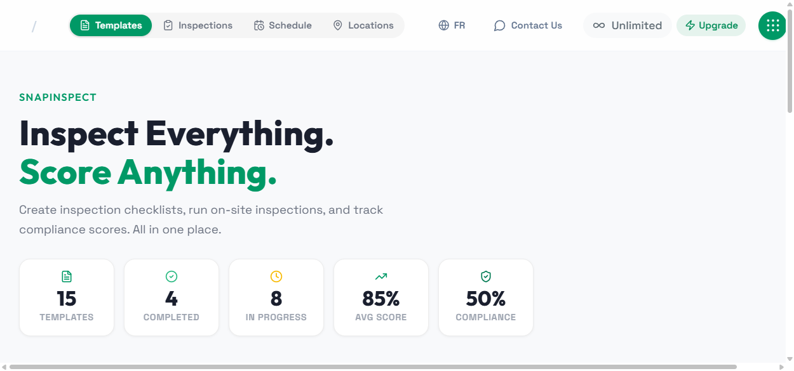
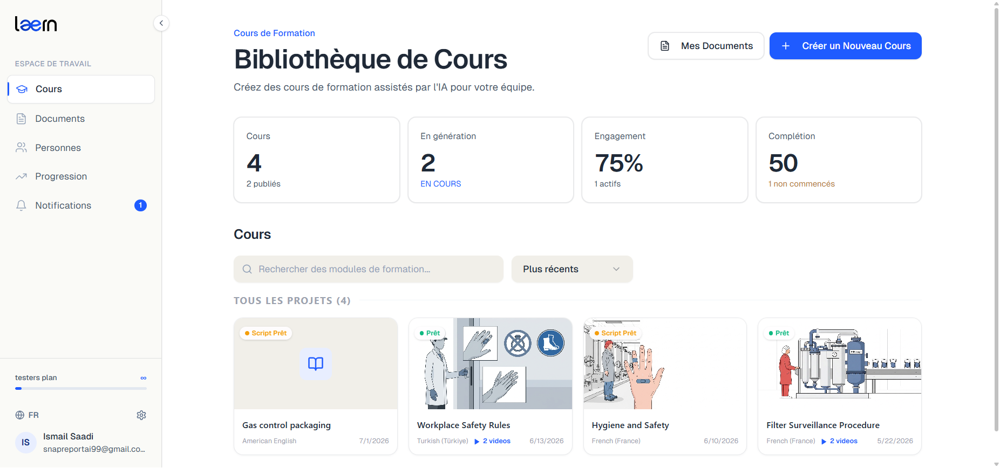
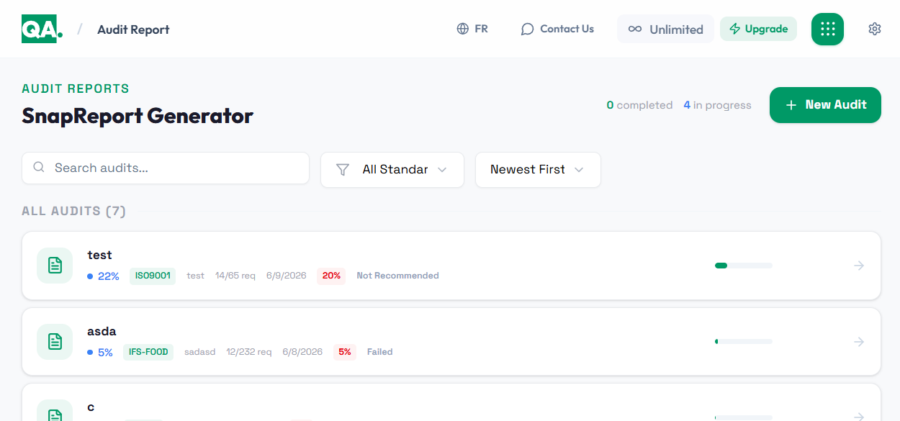

The workflow and its rules come first. Technology follows.
Independent product company / Applied AI
We build tools for work that has to be right.
SnapReport is the team behind myQA.team and LÆRN. We build software for quality, audit, compliance, and workforce training where clear output matters more than AI theatre.


Two products in the field
One focused product team
Built from Europe
01 / CompanyWhat we are here to build
Software with a job to finish
Not AI for the demo.
AI for the workflow.
We turn dense, domain-specific work into software people can actually use.
Our products sit inside audited, regulated, and operational environments. That means the interface has to be clear, the output has to be reviewable, and the intelligence has to understand the domain before it says anything useful.
Important output should stay traceable to its source.
Useful, legible, maintainable software beats a clever demo.
02 / ProductsWork you can open and use
Inside myQA.team / Legal intelligence
AgroBot

Regulatory intelligence for food and agriculture.
See where the law lands.
AgroBot monitors what changes, connects it to what your business makes, and keeps the evidence behind every answer visible.
- MonitorFollow regulatory sources and surface changes that match your markets
- ConnectMap new requirements to products, ingredients, labels, and operations
- ExplainKeep every answer calibrated, reviewable, and linked to its evidence
AgroBotMonitoring active
You askedDoes the latest packaging update affect any of our tomato sauces?
Verified answerI found one likely impact.
The update may affect secondary packaging records for two products sold in the EU.
- Affected records
- 2 products
- Evidence
- 4 sources cross-checked
Product / 03
Quality assistance, powered by AI.
Seven operational tools. One quality workspace.
myQA.team brings audit reports, inspections, evidence capture, label compliance, root-cause analysis, action plans, and training into one quality operating system.
- AuditSnapReport and SnapInspect cover standards-based audits and operational inspections
- CaptureCaptureIQ turns recorded work into transcripts and structured observations
- ImproveLabel checks, root-cause analysis, and action plans close the quality loop
Use the tabs to navigate the screens

Product / 01

A standalone AI-powered training platform.
A document enters. A complete training workflow comes out.
LÆRN is now its own product: a workspace for turning source documents into editable storyboards, narrated videos, quizzes, assignments, and trackable learning.
- CreateUpload PDF, DOCX, TXT, or PPTX files into a guided four-step course workflow
- EditRefine topics, slides, visuals, voice-over scripts, videos, and quizzes
- DeliverAssign training, send access, and follow learner progress from one workspace
Use the tabs to navigate the screens
03 / CapabilitiesWhat we bring to a new problem
Product, software, systems, intelligence
We design the workflow.
Then build every layer.
Make intelligence useful inside the workflow.
Grounded assistants, RAG systems, document understanding, and automated workflows designed around reviewable output.
- LLMs
- RAG
- n8n
- LangChain
Ship the complete product, not a disconnected demo.
Responsive interfaces, dependable APIs, databases, integrations, and deployment brought together as one maintainable system.
- Next.js
- React
- NestJS
- Spring Boot
Build a backbone that can keep growing.
Containerized services, event-driven architecture, delivery pipelines, and observability for resilient software operations.
- Docker
- Kubernetes
- Kafka
- Google Cloud
Turn raw signals into decisions people can act on.
Structured analytics, OCR, object detection and tracking, and predictive models connected to real product interfaces.
- Python
- TensorFlow
- OpenCV
- Big data
Built in-house
Product design · Applied AI · Full-stack delivery · Microservices · Data intelligence · Cloud infrastructure
04 / TeamSmall by design
The people doing the work
Direct line to
the builders.
We keep the team close to the problem. The people in the conversation are the people shaping, designing, and shipping the product.
I
CEO & Executive
Say hello
Ismail Saadi
Product strategy & applied AI
N
Project Manager
Say hello
Nizar Madeby
Planning, coordination & delivery
System Architecture Engineer
View LinkedIn
Karim Klila
Systems, cloud & automation
Software / AI Engineer
View LinkedIn
Firas Eljary
Full-stack, RAG & automation
Data / AI Engineer
View LinkedIn
Khaled Ayedi
AI, data & computer vision
How we work
Product thinking, AI, data, and delivery stay in the same room.
You found us / Let's make it useful
Have a hard workflow worth fixing?
Tell us what your team is doing manually, repeatedly, or without enough confidence. We will tell you honestly whether we can help.
Start a conversation
Prefer email? snapreportai99@gmail.com